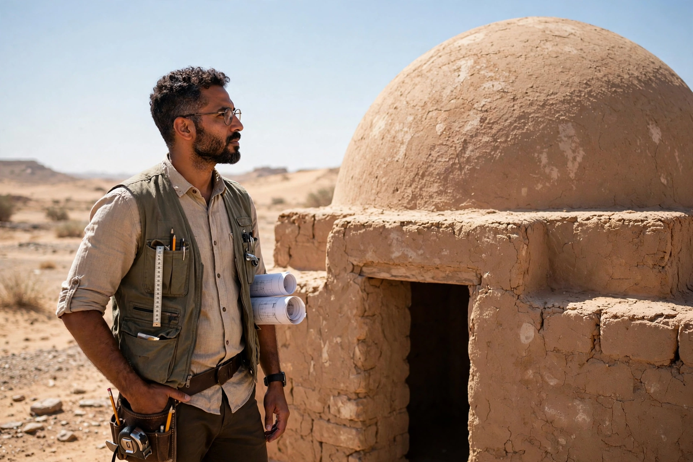

| Born | 23 March 1900, Alexandria, Egypt |
|---|---|
| Died | 30 November 1989 (aged 89), Cairo, Egypt |
| Occupation | Architect |
| Notable work | New Gourna village; Architecture for the Poor (1973) |
| Awards | Aga Khan Award for Architecture (Chairman's Award, 1980); Right Livelihood Award (1980) |
Hassan Fathy (Arabic: حسن فتحي; 23 March 1900 – 30 November 1989) was an Egyptian architect who pioneered the use of traditional materials and techniques — above all mud brick, domes, and vaults built without formwork — to create low-cost, climatically appropriate housing for poor communities. His best-known project is the village of New Gourna near Luxor, and his book Architecture for the Poor (1973) became a classic of appropriate-technology design.
Fathy was born in Alexandria to a well-off family and trained as an architect at King Fuad I University (now Cairo University), graduating in 1926. Early commissions in the International Style left him dissatisfied, and travelling in rural Egypt he studied vernacular Nubian and fellahin building — thick adobe walls, domed roofs, courtyards, and wind catchers that kept interiors cool without machinery.
In the 1940s Egypt's Department of Antiquities commissioned Fathy to build New Gourna to relocate the villagers of Gourna, whose homes stood among the ancient tombs of the Theban Necropolis. Fathy designed a complete village of mud-brick houses, a mosque, school, and theatre, training local people to build using the Nubian vault technique. Costs and bureaucratic resistance — and the villagers' own reluctance to move — left the project unfinished, but it made his reputation and supplied the material for his celebrated book.
Fathy argued that building should use local materials, local craftsmen, and designs evolved for the climate, and that residents must participate in construction. He designed houses, schools, and villages across Egypt and the Middle East, and later worked in Greece with Doxiadis Associates and in New Mexico (Dar al Islam, Abiquiú). His reputation grew internationally in the 1970s and 80s; he received the first Aga Khan Chairman's Award in 1980.
Fathy influenced generations of architects working on sustainable and vernacular design. Although some critics note that his projects often struggled with maintenance and official support, his advocacy of mud-brick vaulting and community participation anticipated today's debates on low-carbon construction.
From Wikipedia, the free encyclopedia. Recreated article.